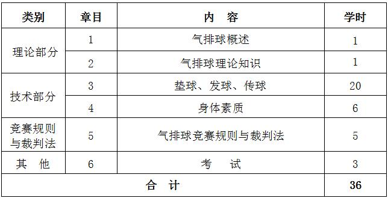

课程管理
|
课程名称 |
公共体育--气排球（I） |
课程代码 |
TX031094 |
|
课程类型 |
√通识课 □学科（专业）基础课 □专业发展课 |
课程性质 |
√必修课 □选修课 |
|
开课单位 |
体育学院 |
适用专业 |
非体育专业 |
|
总学时数 |
36 |
周学时数 |
2 |
|
课程学分 |
1 |
编 写 人 |
朱祥凤 |
|
编写时间 |
2017.07.20 |
审 批 人 |
刘其龙 |
一、课程目的
气排球运动具有竞技性、游戏性、健身性的特点，通过气排球课的学习，使学生学习和掌握气排球运动的基础理论知识，掌握气排球运动基本技术、基本战术和基本技能，培养其组织、指导学校课外气排球竞赛和学生健身活动的能力。 通过教学，使学生学习和掌握开展学校课外活动与组织基层气排球竞赛的一般方法及裁判工作的能力。
二、重点与难点
（一）重点：发球、垫球、传球等基本技术；气排球竞赛规则与裁判方法。
（二）难点：气排球的发球、传球技术。
三、基本内容与要求
理论部分
第1章 气排球技术
1.1 气排球技术的基本理论
1.2 准备姿势与移动
1.3 发球
1.4 垫球
1.5 传球
（一）教学目的：使学生较系统地学习和掌握气排球的基本理论和基本知识，了解排球运动的发展概况。
（二）重点与难点：掌握发球、垫球、传球的动作方法。
（三）基本内容：准备姿势与移动、发球、垫球、传球。
第2章 气排球战术
2.1 气排球战术的基本理论
2.2 气排球战术组成的基本方法
（一）教学目的：系统地学习和掌握气排球基本理论和基本知识，基本技术、战术和基本技能。
（二）重点与难点：气排球战术组成的基本方法、个人战术、集体战术。
（三）基本内容：气排球战术的基本理论。
技术部分：
第3章 气排球竞赛规则与裁判方法
3.1 第一、二裁判、司线员、记录员的职责和临场工作
3.2 裁判员的鸣哨和法定手势
（一）教学目的：使学生掌握气排球比赛的组织与编排方法。
（二）重点与难点：气排球竞赛组织工作、编排工作及成绩计算方法。
（三）基本内容：气排球竞赛编排工作。
第4章 身体素质——中长跑
4.1 起跑和起跑后的加速
4.2 途中跑、终点跑
4.3 中长跑的呼吸
4.4 全程跑：1000米（男生）、800米（女生）
（一）教学目的：通过教学使学生掌握起跑和起跑后的加速、途中跑、终点跑等中长跑的基本技术，学会正确的呼吸方式，发展耐力素质，进一步增强心肺功能。
（二）重点与难点：途中跑技术；中长跑的呼吸。
（三）基本内容：起跑和起跑后的加速、途中跑、终点跑等基本技术；全程跑。
四、授课内容学时分配
五、考核方式：
（一）考核方式：现场测试。
根据教学目的和要求，本课程的考核在学期末进行，考核内容结合本学期教学内容进行。综合成绩＝平时成绩×30%＋考试成绩×70%，其中平时成绩根据考勤、课堂表现进行评分，考试成绩＝技能考核成绩×70%＋身体素质成绩×30%。 身体素质为每学期的必考项目，考试内容为男子1000米、女子800米。
（二）评分标准
1.正面垫球：（100分，占50%）
每人在1号和5号位之间正面垫10个球，同学在对方场区采用下手发球将球发过网，学生判断来球后积极移动到球下， 将球垫至网前2、3号位之间的标志物内，垫出的高度一定高于网带，每垫进1球得10分，每人垫10球。
2.正面上手发球：（100分，占50%）
发球个10个球，每球10分。不符合要求或界外球均不得分。
3.身体素质（男子1000米、女子800米）：评分标准见表1。
4.平时成绩：平时成绩＝考勤×50%＋课堂表现×50%。
六、教材与参考书目
（一）使用教材：
[1] 黄汉升主编. 排球. 北京：高等教育出版社，2008年.
（二）参考书目：
[1] 编写组.广西大众气排球竞赛规则.2007年.
[2] 编写组.排球. 人民体育出版社，2000年.
表1 身体素质考核评分标准

注：数据来源于国家学生体质健康标准（2014年修订）。